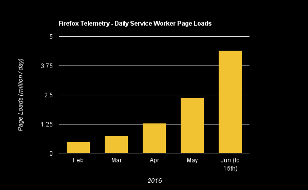
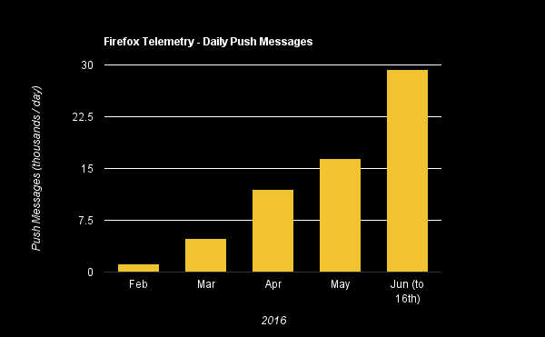
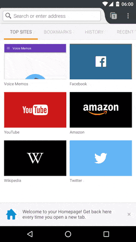

Progressive Web Apps in Firefox
Ben Kelly
@wanderview on
Twitter
and
Github
Joined the service worker effort April 2014
"This isn't too hard. We'll be done September 2014."
September 2014
March 2015
"We don't know when it will be done!"
Finally enabled in the tree December 2015
Shipped to users in Firefox 44 in January 2016

Telemetry includes:
- All Beta, Developer Edition, and Nightly Users
- Release users who opt-in to additional data sharing
Push
- Also shipped in Firefox 44 ...
- ... but only for desktop
- Firefox for Android planned for 48 or 49

Telemetry includes:
- All Beta, Developer Edition, and Nightly Users
- Release users who opt-in to additional data sharing
Devtools
- about:serviceworkers
- worker debugging ...
- ... for fetch and push events
- no install debugging yet
Manifest
- platform support largely implemented
- product integration still needed
- some initial UI experiments have been run
Experimental

Does not use manifest yet
No release date for add-to-homescreen yet
BackgroundSync
- well into development with functional patches
- might release in Firefox 51 or 52
And many more ...
- full Cache API including features like ignoreSearch
- Request.referrer and referrer policy support in
Firefox 47
- Request.cache support in Firefox 48
- Request.integrity SRI support expected in Firefox
50 or 51
- Streams API which is in development and planned to
ship in stages across Firefox 50 to 52
- Storage API which has just begun development
Mozilla cares about the Web
We want to see the Web succeed on mobile
We will continue to invest in APIs and features
toward that goal